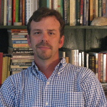
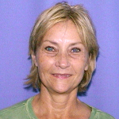
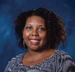
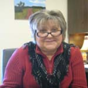

2016-2017
George Atkins received grant to develop Open Educational Resources for Writing 102
Trey Bagwell received grant to develop Open Educational Resources for Writing 250

Keith Boran was promoted to Lecturer
Sheena Boran helped to create online writing instruction resource guide
Kerry Bowers received grant to develop Open Educational Resources for Writing 250

Bill Boyle saw his novel Gravesend published in French by François Guérif
Michelle Bright served as a representative for Oxford High School drama department at Mississippi Delta Tennessee Williams Festival in Clarksdale, Mississippi.

Jenny Bucksbarg presented Prezi presentation regarding FASTrack vs. non-FASTrack students and their ability to critically think and write about race at National Civil Rights Conference in Meridian, Mississippi.
Gretchen Bunde received special acknowledgement for teaching excellence

Dixon Bynum received 2015-2106 Tennessee Arts Commission Individual Artist Grant for Creative Non-fiction

Brad Campbell gave keynote presentation "The Hats We Wear and the Jobs We Share." Writing Center Association Annual Conference. Mississippi State University. Starkville, MS. April 16, 2016

Emily Cooley gonducted volunteer tutoring for high school students and Leap Frog in Oxford, Mississippi.

Betty Crane published a booklet of our writing with her writing group and donated proceeds to our local library in September 2016.
Andrew Davis completed APLU grant to develop adaptive composition course.

Dominiqua Dickey published God's Gonna Trouble the Water" in Mississippi Noir, edited by Tom Franklin, Akashic Books, 2016.

Chip Dunkin promoted to Lecturer.

JoAnn Edwards planned and executed the Speaker’s Edge competition for 2017.

Sean Ennis published “Hope and Wild Panic” short story on Amazon Digital Services.

LaToya Faulk presented “Cultivating Reflective Consciousness in Freshman Composition: Classroom Partnerships with Writing Centers,” at the Conference on College Composition and Communication in Portland, OR, on March 15-18, 2017.

Shanna Flaschka is piloting a new textbook, Food: A Reader for Writers, for Writing 102 in Spring 2017.

Karen Forgette is teaching an Independent Study composition course for incarcerated women.

Jane Gardner relocated from Miami, Florida, to Brooklyn, New York, where she has been volunteered as community organizer helping neighbors master effective written and spoken communication to participate in the political process.

Wendy Goldberg was promoted to Lecturer.

Shirley Gray organized INTERCOM, a student organization to foster social integration for students from other nations.
Angela Green presented “The Closed Fist and the Open Hand: The Art of Persuasion and HBO’s The Wire” at the College Composition and Communication Conference in Portland, Oregon, on 16 March 2017.
Meredith Harper is developing a proposal for a LIBA 102 course focusing on fashion.

Bill Hays is at drafting a creative writing project with the working title “The Divining Rod”

Virginia Henry published “The Blue Line Boy” and “A Long Tenebrae” in Big Muddy: A Journal of the Mississippi River Valley.